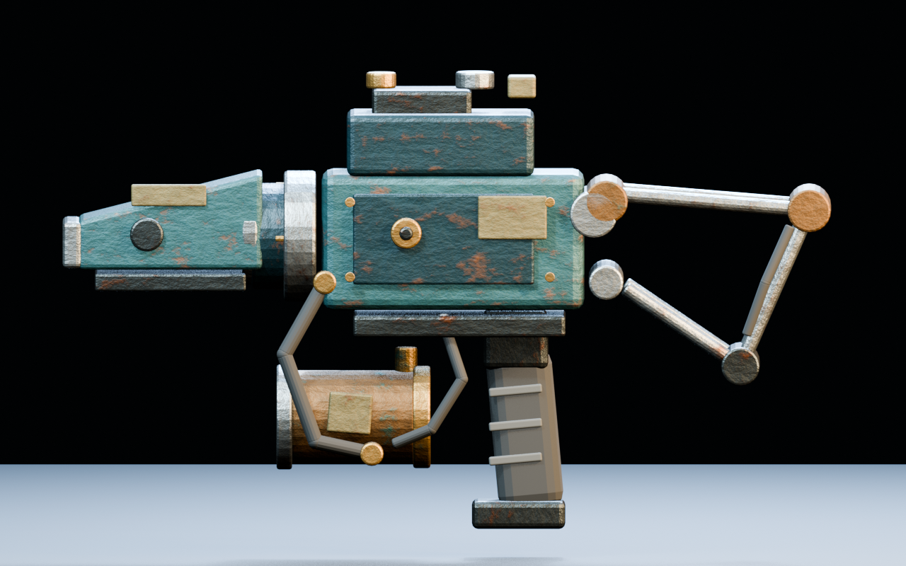
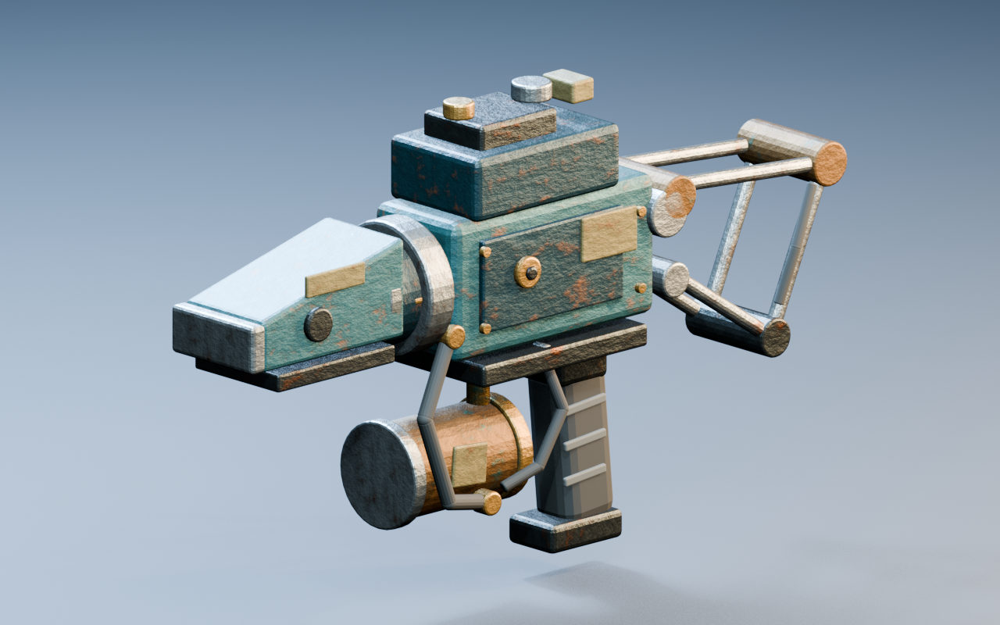
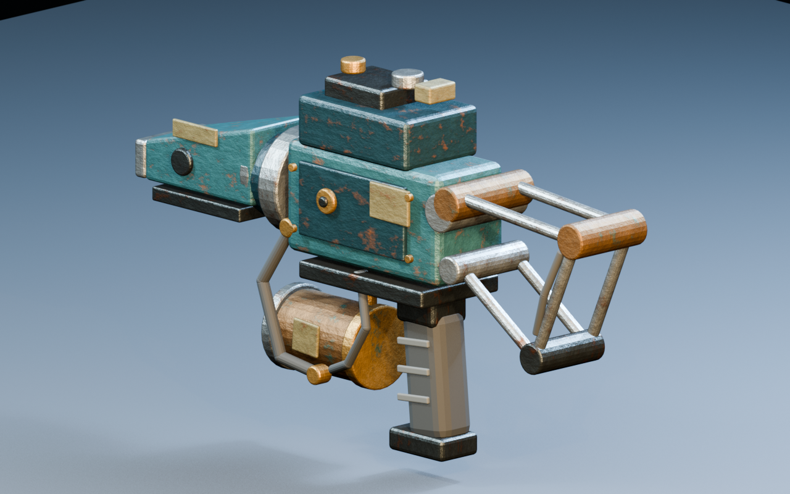
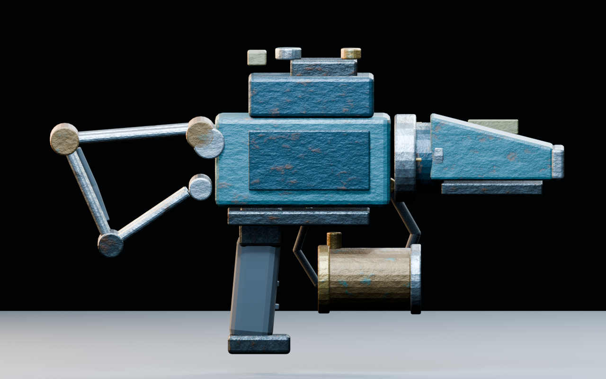
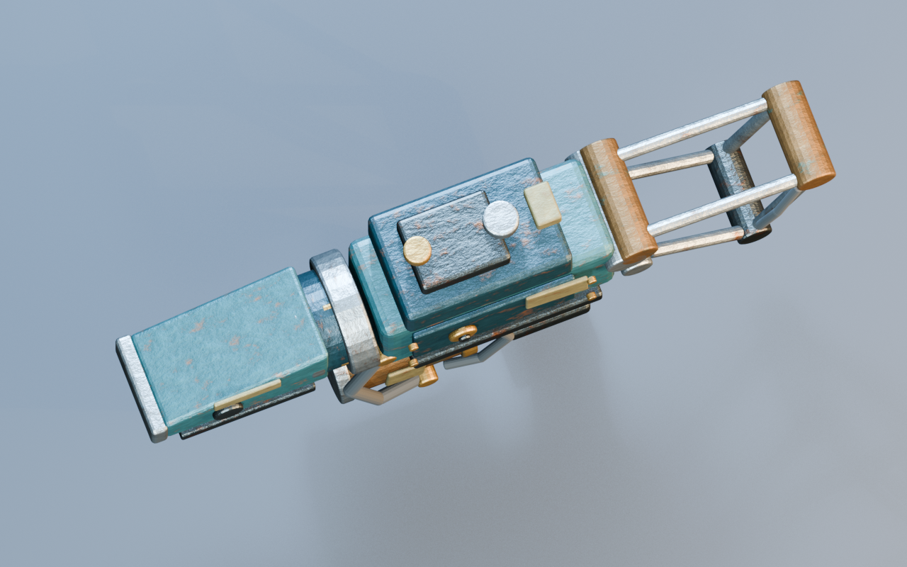
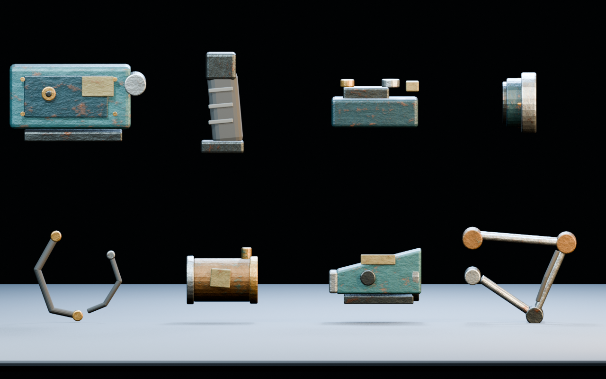
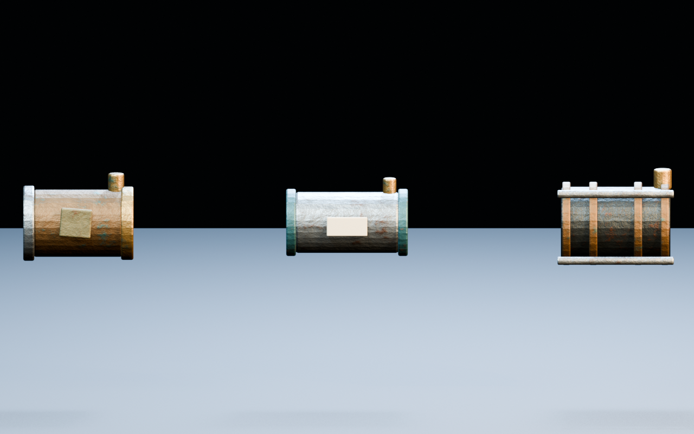
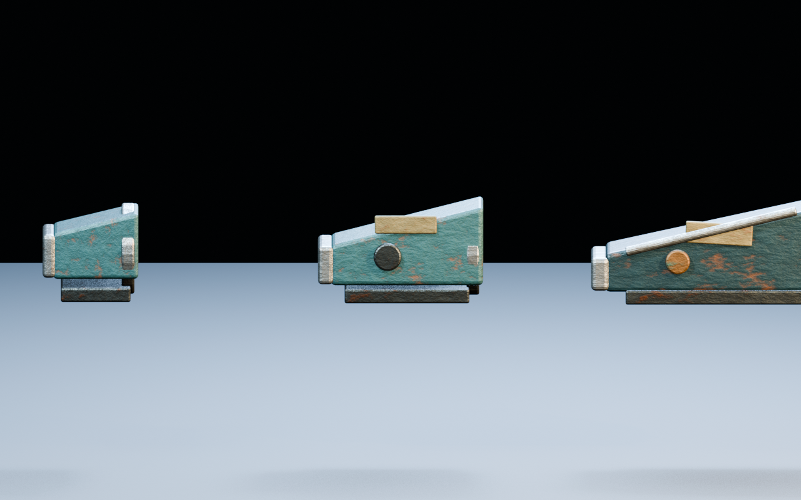
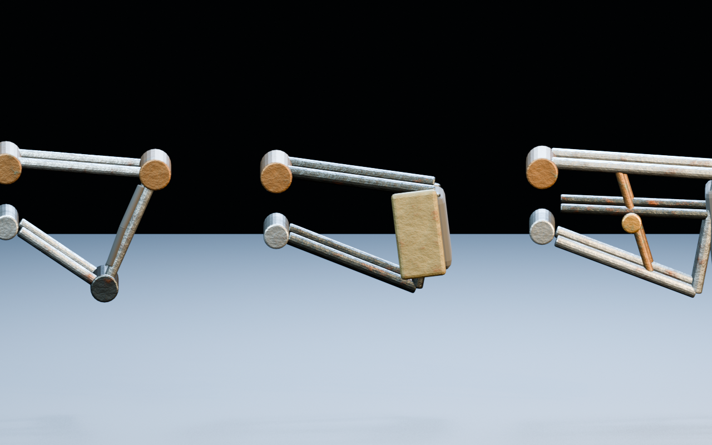
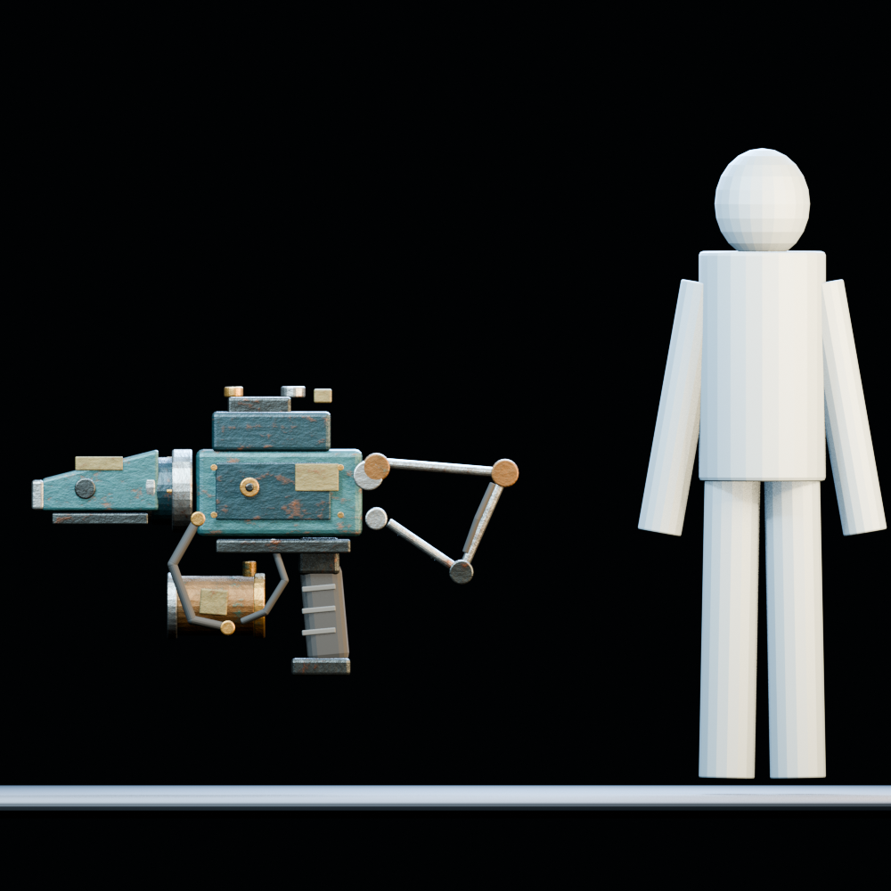

{kind=link}

Standard side profile
The selected compact Gull silhouette with the standard shroud, salvage pressure cell and skeletal rear brace.
Topside / Brine MK1 Alpha / Blender V01
The compact "Gull" direction rebuilt as a modular, exterior-only, nonfunctional deep-ocean game prop. V01 uses a blunt marine-industrial shroud, lower pressure-cell module, skeletal rear support, short external hoses, chipped paint, corroded steel, aged brass and restrained field repairs.

The selected compact Gull silhouette with the standard shroud, salvage pressure cell and skeletal rear brace.

Blunt exterior shroud, front-cap boundary, lower visual cell and short hose routing.

Skeletal brace, hinge language, core proportions and rubber grip.

Clean opposite-side read of the shared module boundaries.

Narrow depth, compact top housing and two-sided brace construction.

Core, grip, top housing, front cap, hose kit, PressureCell A, FrontShroud B and RearBrace A shown as separated exterior modules.

Three swappable lower modules with materially distinct repair, service and cage silhouettes.

The Reach form is visibly longer and more deliberate while preserving the same blunt front and Brine core identity.

Three distinct rear treatments using the same exterior hinge locations.

The standard assembled exterior is approximately 1.23 m long, 0.226 m wide and 0.732 m tall at its full bounds.
{kind=link}
{kind=link}
{kind=link}
{kind=link}
{kind=link}
{kind=link}
{kind=link}
{kind=link}
{kind=link}